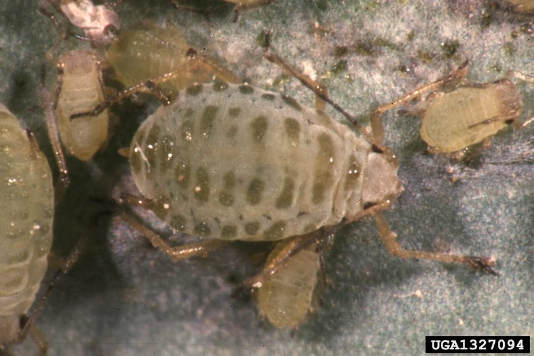

सरसों का माहूंMustard Aphid
Lipaphis erysimi · Aphididae · INS-0060

- Scientific name
- Lipaphis erysimi (Kaltenbach, 1843)
- Family
- Aphididae
- Hindi
- सरसों का माहूं
- Status here
- native
- IUCN
- not evaluated
- Review
- audited and independently read
When to look कब देखें
Expected mainly in November, December, January, February, March.
Uses and possibilities उपयोग और संभावनाएँ
Drawn from the documented uses in the profile below, where each is labelled traditional, current or a research lead. All uses →
सरसों का माहूं / Mustard Aphid
Lipaphis erysimi (Kaltenbach, 1843) — Aphididae
सरसों का माहूं — सरसों के खेत में सर्दियों में भीड़ में बैठी पीली-हरी मक्खियाँ जो पौधे का रस चूसती हैं। इतनी छोटी कि अकेले दिखाई नहीं देतीं, पर हज़ारों मिलकर पूरे पौधे को सूखा देती हैं। नवंबर से मार्च तक सरसों की बर्बादी का सबब। पूरे भारत में सबसे आम सरसों का कीट। कीटनाशक से ज़्यादा, प्राकृतिक दुश्मनों से — लेडीबग और ततैयों से — नियंत्रण होता है। बिना किसी दवा के सरसों बढ़ सकती है।
Quick Identification त्वरित पहचान
| Feature | Description |
|---|---|
| Adult and nymph colour | Pale yellow-green to greenish, translucent body |
| Size | 2.5–3 mm; small, soft-bodied |
| Clustering | Always found in dense colonies on leaves, stems, and flower buds |
| Antennae and legs | Pale, thread-like antennae; long thin legs |
| Cornicles | Short, tubular, at the rear of the abdomen (diagnostic for Lipaphis) |
| Damage sign | Leaves curl and distort; plants become stunted and yellowed; honeydew drips onto lower leaves |
| Sooty mould | Black fungal coating on affected leaves and buds |
Field tip: Look at mustard plants in late November or December. If leaves are curled and yellowed, and you see a yellowish cluster of tiny insects on the undersides of leaves or on the stem and buds, it is the mustard aphid. Gently tap the plant: if you see a cloud of tiny insects moving away, they are aphids. The presence of black sooty mould is a sure sign.
हिंदी — कैसे पहचानें: सरसों के पत्ते मुड़े हुए, पीले पड़े हैं, और पत्ती के नीचे हज़ारों पीली-हरी छोटी मक्खियों की भीड़ है? ये हैं। काली फफूंद भी दिखेगी। पौधे पर थपथपाइए तो उड़ जाएँ।
Morphology आकारिकी
Biometrics:
| Measurement | Range |
|---|---|
| Adult body length | 2.5–3 mm |
| Nymph (1st instar) | 0.5 mm |
| Nymph (final instar) | 2.5 mm |
| Cornicles | Short, tubular, dark-tipped |
| Cauda (tail) | Small, rounded plate at rear |
| Cluster density | 20–100 individuals per leaf |
Adult: Small, soft-bodied insect, colour varying from pale yellow-green to darker green depending on the plant host and season. The body is oval, slightly wider at the abdomen. Antennae are long and thread-like, with five segments. The cornicles are short and cylindrical, dark-tipped. Legs are long and pale. Both winged (alate) and wingless (apterous) forms exist, depending on environmental conditions and population density.
Nymph: Smaller versions of the adult, pale yellow-green, gregarious, moving slowly among the plant's leaves and buds.
Egg: Laid on a narrow range of plants (primarily brassicas), dark, oval, found in crevices of the plant during autumn.
हिंदी: पीली-हरी, छोटी, नरम कीट। अकेले नहीं, झुंड में। पंखों वाली भी, बिना पंखों वाली भी। अंडे गहरे, सर्दी में सरसों पर।
Behaviour & Ecology व्यवहार और पारिस्थितिकी
A specialist aphid, feeding almost exclusively on plants of the family Brassicaceae (mustard, radish, cabbage, turnip, cauliflower, and wild relatives). It is a sap-feeder, using its piercing-sucking mouthpart to draw phloem sap directly from the plant. The aphid reproduces rapidly in cool, moist conditions of the rabi (winter) season, with females reproducing asexually (parthenogenesis), so a small population can balloon to millions within weeks. The insect's feeding distorts the plant's growth, curls the leaves, and reduces photosynthesis. Honeydew, the sugary excrement dropped by aphids, falls onto lower leaves and attracts sooty mould fungi, further reducing the plant's vigour.
The mustard aphid is also a vector of plant viruses, particularly turnip mosaic virus and cauliflower mosaic virus, which it transmits in a non-persistent manner as it feeds. The insect has few major predators in monoculture fields, but where flowering herbs are present (field margins, nearby gardens), ladybird beetles and hoverflies can reduce populations significantly.
हिंदी: ठंड में तेज़ी से बढ़ता है, गर्मी में गायब हो जाता है। सरसों की फसल को ही पसंद करता है। रस चूसने से पत्ते मुड़ जाते हैं। वायरस भी फैलाता है। मेंढक और लेडीबग इसे खाते हैं।
Life Cycle / Phenology जीवन चक्र
| Stage / season | Event |
|---|---|
| Egg, 5–7 days | Laid on overwintering brassica crops or weeds in autumn |
| Nymph, 5–7 days | Four instars, feeding on plant sap; fastest in cool weather |
| Adult (asexual female), 2–3 weeks | Multiple generations |
| September–October | Eggs hatch from overwintering population; foundresses begin colony on new mustard seedlings |
| November–January | Population explosion; heaviest infestation; multiple generations per month |
| February–March | Continued high populations as mustard approaches maturity |
| April onwards | Population collapse as temperatures rise; final generation produces males and sexual females for mating and egg-laying |
| May–September | Absent or low; survives on stray brassica plants and weeds |
हिंदी: अंडा पाँच-सात दिन, इल्ली पाँच-सात दिन। नवंबर-जनवरी में सब से ज़्यादा। गर्मी आते ही गायब। एक महीने में दर्जनों पीढ़ियाँ।
Host Plants or Prey आहार
Primary hosts:
- Mustard and rapeseed Indian Mustard: the primary host
- Cabbage and cauliflower (Brassica oleracea vars.): heavily infested
- Radish (Raphanus sativus): significant host
- Turnip (Brassica rapa ssp. rapa): heavily infested
- Other brassicas: broccoli, Brussels sprouts, kohlrabi, and other crucifers
- Weeds: wild radish and other cruciferous weeds
Predators / Natural Enemies शत्रु
- Ladybird beetles: Transverse Ladybird (Menochilus sexmaculatus), Coccinella septempunctata, and other species (most effective predators)
- Hoverflies: Episyrphus balteatus and other Syrphus species
- Parasitoid wasps: Aphidius and Diaeretiella species
- Spiders: web-building and hunting spiders that frequent mustard fields
- Entomopathogenic fungi: Pandora neoaphidis and Erynia species under high humidity
- Natural enemies supporting habitat: flowering plants at field margins that host parasitoids and predators
Agricultural / Human Relevance कृषि प्रासंगिकता
Major pest of rabi crops. The mustard aphid is the most important insect pest of mustard and other brassica crops in the rabi (winter) season across India. Losses can reach 50–100% in heavy infestations, especially in areas where natural enemies have been eliminated by broad-spectrum spraying. The insect is also a vector of several viruses that further reduce crop yield and quality.
What works (Traditional, Today, Research direction):
- Traditional: Selection of early-maturing varieties that avoid peak aphid pressure. Removal of infested leaves by hand in small plots. Field sanitation: destruction of brassica crop residues and weeds at the end of the season.
- Today: Use of resistant varieties (several modern mustard varieties show good tolerance). Yellow sticky traps to monitor populations. Neem-based sprays applied at the first sign of aphid appearance, or other selective insecticides (imidacloprid, dimethoate) only if numbers exceed a threshold (5–10 aphids per terminal shoot). Most importantly: conservation of natural enemies by avoiding broad-spectrum sprays, and by maintaining flowering herbs at field margins.
- Research direction (a lead, not a result): Habitat management for ladybird beetles and hoverflies. Border strips of flowering plants (like mustard itself, or herbs) that provide nectar and pollen for natural enemies, resulting in sustained biological control. The village practice of tolerating some aphids while relying on natural enemies is proven and costs nothing but observation.
हिंदी: सरसों का सब से बड़ा दुश्मन। जल्दी तैयार होने वाली किस्में। पीली पट्टियों से निगरानी। नीम का छिड़काव सिर्फ़ अगर ढेर सारे हों। सब से अहम: लेडीबग और ततैयों को बचाना। खेत के किनारे फूलों की पंक्तियाँ लगाना काम करता है।
Expected Locally स्थानीय रूप से अपेक्षित
Not a field record. Written from published accounts for eastern Uttar Pradesh. No confirmed local sighting yet — if you have seen it, that is what the atlas needs.
अभी तक स्थानीय पुष्टि नहीं। यह विवरण प्रकाशित स्रोतों से है, किसी अवलोकन से नहीं।
Expected in every mustard and cabbage field in Basti district during the rabi season, from November through March. Population density varies with weather: peak infestations occur during cool, moist weather (December–January). A simple record of aphid-infested mustard plants, with count of aphids per terminal shoot, date, and location, would constitute the first local confirmation.
Distribution वितरण
Global range: Temperate and subtropical regions of Europe, Asia, and North Africa; native to Eurasia.
In India: All mustard and brassica-growing regions, from the Himalayan foothills to the southern plains.
In Uttar Pradesh: Throughout the rabi-growing belt, with particularly high incidence in the eastern plains.
In Basti district / eastern UP: Expected in all mustard, cabbage, and brassica fields during the rabi season. Population peaks during December–January when weather is cool and moist.
Research Questions शोध प्रश्न
Anyone can investigate these | कोई भी इन प्रश्नों की जाँच कर सकता है
- How many mustard aphids can a single ladybird beetle consume in one day at different temperatures? — Conduct laboratory observation at different temperatures (15°C, 20°C, 25°C, 30°C).
- Do mustard fields bordered by flowering herbs (like fenugreek or coriander) have lower aphid populations than fields without such borders? / क्या जिन सरसों के खेतों के किनारे मेथी या धनिया जैसी फूल वाली पंक्तियाँ हों, उनमें कम माहूं होता है? — Compare paired fields with and without borders.
- Which mustard varieties in your village show resistance to heavy aphid infestation? — Measure aphid density on different cultivars grown side by side.
- What parasitoid wasp species emerge from field-collected mustard aphids? — Bring infested plant shoots indoors in a mesh-covered container and observe wasp emergence.
- How does the timing of mustard sowing (early November vs. late November) affect peak aphid populations in your field? / अलग-अलग समय पर बोई गई सरसों में माहूं की संख्या कैसे बदलती है? — Compare early and late sowings over a season.
Similar Species मिलती-जुलती प्रजातियाँ
| Species | How to tell apart | हिंदी |
|---|---|---|
| Cabbage Aphid (Brevicoryne brassicae) | Greyish-green to blue-green, waxy, larger (2.5–3.5 mm); found on cabbage leaves; forms dense colonies | पत्ता गोभी का माहूं, नीला-हरा, मोमी |
| Green Peach Aphid (Myzus persicae) | Pale green to yellow, found on a wide range of plants (not just brassicas); smaller and more active | आड़ू का हरा माहूं, सब कुछ पर |
| Plant lice and mealy bugs | Waxy or downy coating, larger insects; different host preferences | अलग परिवार, बड़े, मोमी लेप |
Field rule: Tiny, pale yellow-green translucent aphids clustering densely on mustard leaves and buds, causing leaf curling and yellowing, with black sooty mould below, is the mustard aphid.
Taxonomy & Classification वर्गीकरण
Original description. Described by Kaltenbach in 1843 in Monographie der Pflanzenlöuse as Aphis erysimi. The genus Lipaphis was erected by Mordvilko in 1919. The species name erysimi refers to the genus Erysimum (wallflower), a brassicaceous plant on which the species was first found.
Subspecies. Monotypic — no subspecies are currently recognised.
Family and order placement. Order Hemiptera, family Aphididae (true aphids). The genus Lipaphis comprises specialized aphids of brassicaceous plants.
Phylogenetic notes. Lipaphis erysimi is host-specific to Brassicaceae and does not readily shift to other plant families, in contrast to the more polyphagous genera like Myzus.
IUCN status rationale. Not evaluated. As a widespread pest of cultivated crops, it is not assessed by the IUCN.
Photo Gallery फोटो गैलरी
Photos needed आवश्यक फोटो
- [ ] Colony of aphids on mustard leaf (पत्ती पर माहूं)
- [ ] Infested mustard plant showing curled leaves (मुड़ी हुई पत्तियाँ)
- [ ] Sooty mould on infested leaves (काली फफूंद)
No photos yet — add field photos to media/species/mustard_aphid/ and run node scripts/sync_photos.js.
References संदर्भ
- Kaltenbach, J.H. (1843). Monographie der Pflanzenlöuse (Phytophthires). Cassel, Germany. [original description, as Aphis erysimi]
- Mordvilko, A. (1919). Die Blattläuse (Aphidina). Archiv für Naturgeschichte A(1). [genus revision]
- Atwal, A.S. & Sandhu, G.S. (1971). Insect Pests of Crops and Their Control in India. Kalyani Publishers, New Delhi.
- Srinivasan, G. et al. (2005). A Guide to Integrated Pest Management of Major Crops in South Asia. CAB International, Wallingford.
- Indian Council of Agricultural Research (2017). Integrated Pest Management Package for Mustard. ICAR–NCIPM, New Delhi.
- GBIF Occurrence Data — Lipaphis erysimi, India (2023).
Source file: species/fauna/insects/mustard_aphid.md